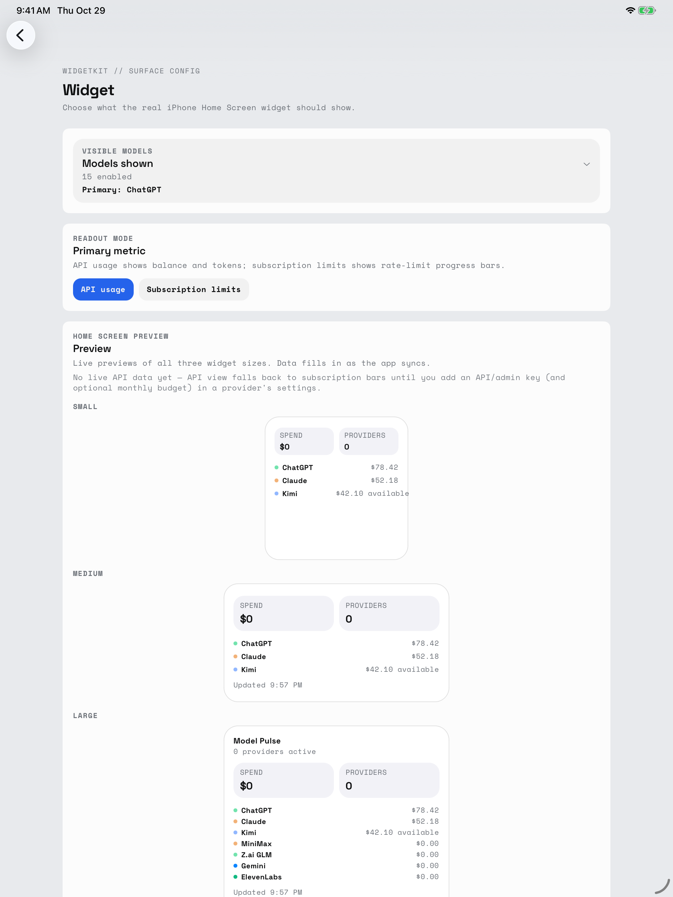

Model Pulse / iPad
Your pulse.
On your Home Screen.
Choose your models and primary metric.
Preview small, medium, and large widgets.

Choose your models and primary metric.
Preview small, medium, and large widgets.
